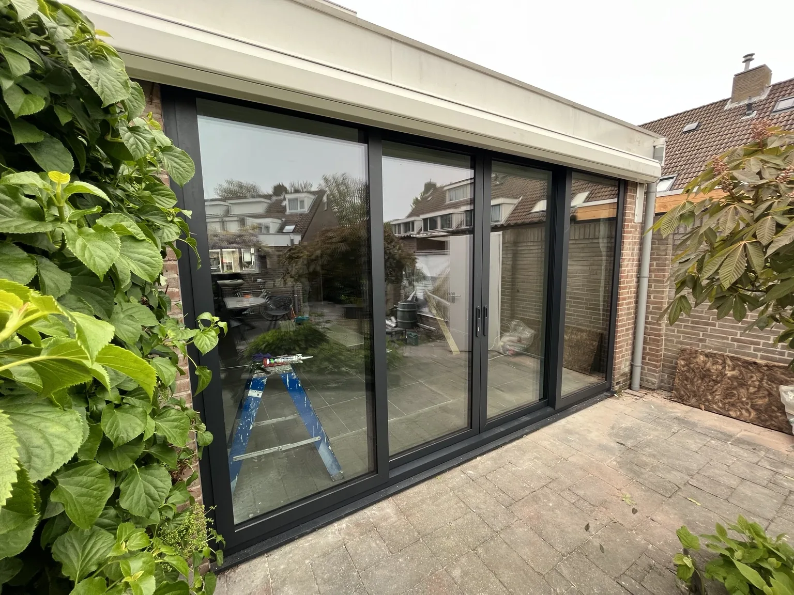
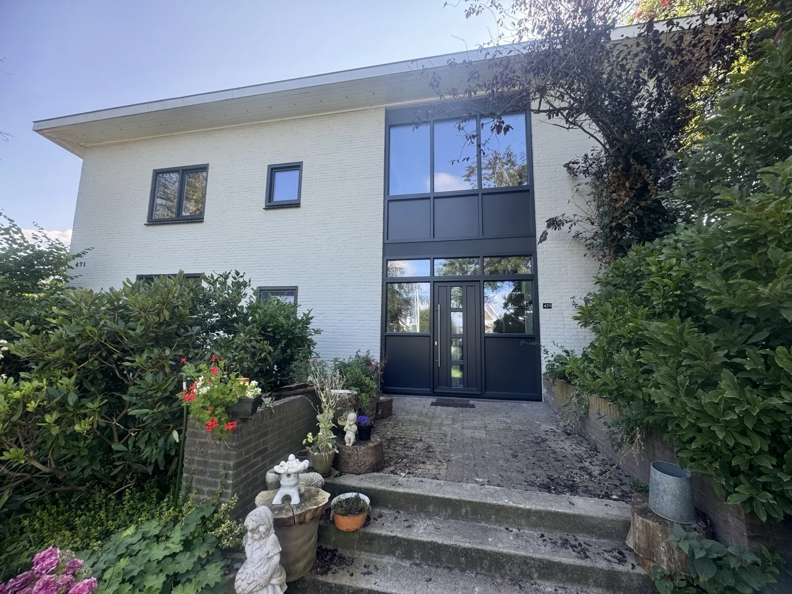
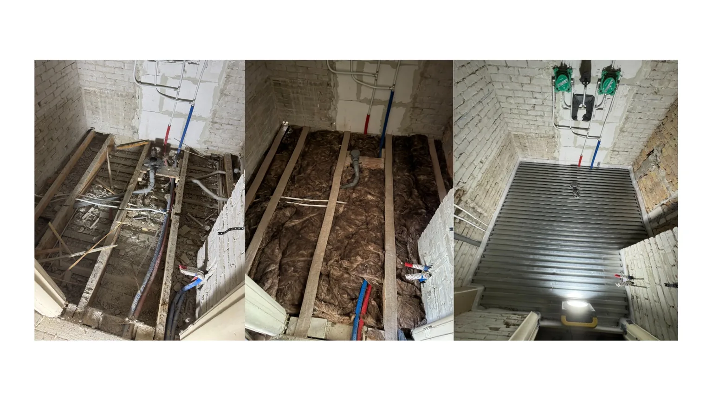

Woning renovatie
Voor complete trajecten of delen van een renovatie met duidelijke coördinatie en vaste communicatie.
Aannemer in Den Haag en Delft
WGMI Bouw werkt voor klanten die duidelijkheid, nette uitvoering en een professionele uitstraling verwachten. Van woningrenovaties en kozijnen tot ruwbouw, wanden, plafonds en schuifdeursystemen.
Vertel kort wat je wilt laten uitvoeren. Via WhatsApp of telefoon reageren we snel.
Diensten
Wij richten ons op renovatie- en afbouwprojecten waar kwaliteit, betrouwbaarheid en nette oplevering belangrijk zijn.
Voor complete trajecten of delen van een renovatie met duidelijke coördinatie en vaste communicatie.
Vervanging en vernieuwing van kozijnen, puien en schuifdeuren voor meer licht, uitstraling en gebruiksgemak.
Houten constructies, isolatie, OSB, gipsplaten en nette afwerking voor renovatie en nieuwbouw.
Projecten
Hieronder staan echte projecten met foto’s, galerijen en before/after presentaties.

Project 01
Nieuwe schuifdeuren en vernieuwde gevelbekleding zorgen voor meer licht, meer openheid en een modernere uitstraling.
Bekijk project
Project 02
Het gebouw is vernieuwd met nieuwe kozijnen en een strakkere, modernere uitstraling aan de voorzijde.
Bekijk project
Project 03
Opbouw van nieuwe houten wanden, isolatie en OSB als stevige basis voor verdere afbouw.
Bekijk project
Project 04
Technische voorbereiding van vloeren en plafondconstructie voor verdere afwerking met een strak eindresultaat.
Bekijk projectReviews
“Net werk geleverd, duidelijke communicatie en afspraken werden nagekomen.”
Google review placeholder“Fijne samenwerking en een strak eindresultaat. Precies wat we wilden.”
Google review placeholder“Professionele uitstraling, goede planning en nette oplevering.”
Google review placeholderContact
Vertel kort wat je wilt laten uitvoeren. We gebruiken nu een basisformulier dat later eenvoudig gekoppeld kan worden aan e-mail of Hostinger Forms.
Telefoon: +31 615447048
E-mail: info@wgmibouw.nl
Adres: Nieuwstraat 4, 2611HK, Delft
Werkgebied: Den Haag, Delft en omgeving
KvK: 85242543
BTW: NL004070348B58